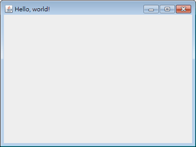

Swing 快速入門
建立視窗
顯示結果：

加入按鈕
顯示結果：


你已經快速入門了～
依樣畫葫蘆，陸續加入像是：文字標籤的 JLabel、文字區域的 JTextArea、單行輸入欄的 JTextField、密碼輸入欄位 JPasswordField…等等各式組件，就能打造出視窗了！
接著再查 API 看看各個元件有哪些功能可用，然後深入研究 java.awt.event 的其它事件處理，就能熟悉 Java 的視窗應用程式設計！